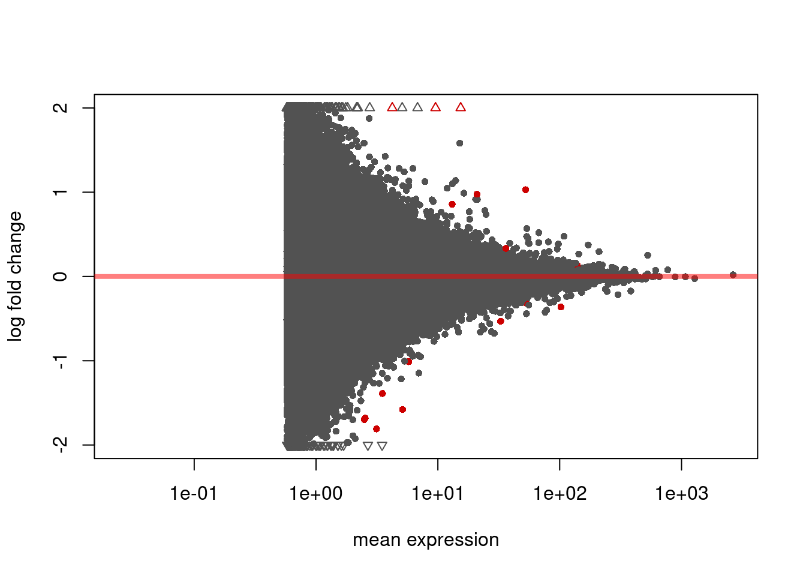

Differential Exon Usage Analysis: DEXSeq
Last updated: 2021-09-17
Checks: 7 0
Knit directory: amnio-cell-free-RNA/
This reproducible R Markdown analysis was created with workflowr (version 1.6.2). The Checks tab describes the reproducibility checks that were applied when the results were created. The Past versions tab lists the development history.
Great! Since the R Markdown file has been committed to the Git repository, you know the exact version of the code that produced these results.
Great job! The global environment was empty. Objects defined in the global environment can affect the analysis in your R Markdown file in unknown ways. For reproduciblity it’s best to always run the code in an empty environment.
The command set.seed(20200224) was run prior to running the code in the R Markdown file. Setting a seed ensures that any results that rely on randomness, e.g. subsampling or permutations, are reproducible.
Great job! Recording the operating system, R version, and package versions is critical for reproducibility.
Nice! There were no cached chunks for this analysis, so you can be confident that you successfully produced the results during this run.
Great job! Using relative paths to the files within your workflowr project makes it easier to run your code on other machines.
Great! You are using Git for version control. Tracking code development and connecting the code version to the results is critical for reproducibility.
The results in this page were generated with repository version 153ebef. See the Past versions tab to see a history of the changes made to the R Markdown and HTML files.
Note that you need to be careful to ensure that all relevant files for the analysis have been committed to Git prior to generating the results (you can use wflow_publish or wflow_git_commit). workflowr only checks the R Markdown file, but you know if there are other scripts or data files that it depends on. Below is the status of the Git repository when the results were generated:
Ignored files:
Ignored: .Rhistory
Ignored: .Rproj.user/
Ignored: .bpipe/
Ignored: analysis/old_analysis/
Ignored: analysis/splicejam.nb.html
Ignored: analysis/vis.nb.html
Ignored: code/.bpipe/
Ignored: code/.rnaseq-test.groovy.swp
Ignored: data/.bpipe/
Ignored: data/190717_A00692_0021_AHLLHFDSXX/
Ignored: data/190729_A00692_0022_AHLLHFDSXX/
Ignored: data/190802_A00692_0023_AHLLHFDSXX/
Ignored: data/200612_A00692_0107_AHN3YCDMXX.tar
Ignored: data/200612_A00692_0107_AHN3YCDMXX/
Ignored: data/200626_A00692_0111_AHNJH7DMXX.tar
Ignored: data/200626_A00692_0111_AHNJH7DMXX/
Ignored: data/CMV-AF-database-corrected-oct-2020.csv
Ignored: data/CMV-AF-database-final-included-samples.csv
Ignored: data/GONE4.10.13.txt
Ignored: data/HK_genes.txt
Ignored: data/IPA molecule summary.xls
Ignored: data/IPA-molecule-summary.csv
Ignored: data/brain-development-geneset.txt
Ignored: data/deduped_rRNA_coverage.txt
Ignored: data/gene-transcriptome-analysis/
Ignored: data/hg38_rRNA.bed
Ignored: data/hg38_rRNA.saf
Ignored: data/ignore-overlap-mapping/
Ignored: data/ignore/
Ignored: data/joindata.csv
Ignored: data/metadata.csv
Ignored: data/rds/
Ignored: data/samples.csv
Ignored: data/star-genome-analysis/
Ignored: output/c2Ens.RData
Ignored: output/c5Ens.RData
Ignored: output/exclude-CMV11/
Ignored: output/hEns.RData
Ignored: output/keggEns.RData
Ignored: output/salmon-bandits-filt.csv
Ignored: output/salmon-bandits.csv
Ignored: output/salmon-limma-voom-c5Cam.csv
Ignored: output/salmon-limma-voom.Rmd/
Ignored: output/salmon-limma-voom.csv
Ignored: output/salmon-ruv-all-gsea-c2.csv
Ignored: output/salmon-ruv-all-gsea-c5.csv
Ignored: output/salmon-ruv-all.csv
Ignored: output/salmon-ruvseq-edger.csv
Ignored: output/star-fc-limma-voom-all-gsea-c2.csv
Ignored: output/star-fc-limma-voom-all-gsea-c5.csv
Ignored: output/star-fc-limma-voom-all.csv
Ignored: output/star-fc-limma-voom-no_us_ab-gsea-c2.csv
Ignored: output/star-fc-limma-voom-no_us_ab-gsea-c5.csv
Ignored: output/star-fc-limma-voom-no_us_ab.csv
Ignored: output/star-fc-ruv-all-gsea-c2.csv
Ignored: output/star-fc-ruv-all-gsea-c5.csv
Ignored: output/star-fc-ruv-all.csv
Ignored: output/star-fc-ruv-no_us_ab-gsea-c2.csv
Ignored: output/star-fc-ruv-no_us_ab-gsea-c5.csv
Ignored: output/star-fc-ruv-no_us_ab.csv
Untracked files:
Untracked: analysis/STAR-FC-RUV-all.Rmd
Untracked: analysis/STAR-FC-RUV-exclude-US-ab.Rmd
Untracked: analysis/salmon-BANDITS-filtered.Rmd
Untracked: analysis/splicejam.Rmd
Untracked: analysis/vis.Rmd
Untracked: code/SJtoBED12.sh
Untracked: code/Subread_to_DEXSeq/
Untracked: code/bam2bw.R
Untracked: code/compare.R
Untracked: code/rnaseq.star.count-exons.groovy
Untracked: code/rnaseq.star.groovy
Untracked: code/slinker.sh
Untracked: renv.lock
Untracked: satuRn_0.99.7.tar.gz
Unstaged changes:
Modified: .gitignore
Modified: analysis/salmon-BANDITS.Rmd
Modified: code/rnaseq.groovy
Note that any generated files, e.g. HTML, png, CSS, etc., are not included in this status report because it is ok for generated content to have uncommitted changes.
These are the previous versions of the repository in which changes were made to the R Markdown (analysis/STAR-DEXSeq.Rmd) and HTML (docs/STAR-DEXSeq.html) files. If you’ve configured a remote Git repository (see ?wflow_git_remote), click on the hyperlinks in the table below to view the files as they were in that past version.
| File | Version | Author | Date | Message |
|---|---|---|---|---|
| Rmd | 153ebef | Jovana Maksimovic | 2021-09-17 | wflow_publish(c(“analysis/index.Rmd”, “analysis/STAR-DEXSeq.Rmd”)) |
Data import
files <- list.files(here("data/star-genome-analysis/count-exons-pe"),
pattern="PE.txt$", full.names = TRUE)
names(files) <- strsplit2(files, "_")[,6]
files <- files[grepl("CMV", names(files))]
flatGff <- list.files(here("data/star-genome-analysis"),
pattern="DEXSeq.chr.gff$", full.names = TRUE)
basename(files) [1] "190717_A00692_0021_TL1906128_CMV30_MAN-20190712_OvationSoloRNA_L000.PE.Aligned.out.srt.dedup.count_exons_RNA_PE.txt"
[2] "190717_A00692_0021_TL1906129_CMV31_MAN-20190712_OvationSoloRNA_L000.PE.Aligned.out.srt.dedup.count_exons_RNA_PE.txt"
[3] "190717_A00692_0021_TL1906130_CMV8_MAN-20190712_OvationSoloRNA_L000.PE.Aligned.out.srt.dedup.count_exons_RNA_PE.txt"
[4] "190717_A00692_0021_TL1906131_CMV9_MAN-20190712_OvationSoloRNA_L000.PE.Aligned.out.srt.dedup.count_exons_RNA_PE.txt"
[5] "190717_A00692_0021_TL1906132_CMV26_MAN-20190712_OvationSoloRNA_L000.PE.Aligned.out.srt.dedup.count_exons_RNA_PE.txt"
[6] "190717_A00692_0021_TL1906133_CMV27_MAN-20190712_OvationSoloRNA_L000.PE.Aligned.out.srt.dedup.count_exons_RNA_PE.txt"
[7] "190717_A00692_0021_TL1906134_CMV14_MAN-20190712_OvationSoloRNA_L000.PE.Aligned.out.srt.dedup.count_exons_RNA_PE.txt"
[8] "190717_A00692_0021_TL1906135_CMV15_MAN-20190712_OvationSoloRNA_L000.PE.Aligned.out.srt.dedup.count_exons_RNA_PE.txt"
[9] "190717_A00692_0021_TL1906136_CMV20_MAN-20190712_OvationSoloRNA_L000.PE.Aligned.out.srt.dedup.count_exons_RNA_PE.txt"
[10] "190717_A00692_0021_TL1906137_CMV21_MAN-20190712_OvationSoloRNA_L000.PE.Aligned.out.srt.dedup.count_exons_RNA_PE.txt"
[11] "190717_A00692_0021_TL1906138_CMV1_MAN-20190712_OvationSoloRNA_L000.PE.Aligned.out.srt.dedup.count_exons_RNA_PE.txt"
[12] "190717_A00692_0021_TL1906139_CMV2_MAN-20190712_OvationSoloRNA_L000.PE.Aligned.out.srt.dedup.count_exons_RNA_PE.txt"
[13] "190717_A00692_0021_TL1906140_CMV3_MAN-20190712_OvationSoloRNA_L000.PE.Aligned.out.srt.dedup.count_exons_RNA_PE.txt"
[14] "190717_A00692_0021_TL1906141_CMV4_MAN-20190712_OvationSoloRNA_L000.PE.Aligned.out.srt.dedup.count_exons_RNA_PE.txt"
[15] "190717_A00692_0021_TL1906142_CMV10_MAN-20190712_OvationSoloRNA_L000.PE.Aligned.out.srt.dedup.count_exons_RNA_PE.txt"
[16] "190717_A00692_0021_TL1906143_CMV11_MAN-20190712_OvationSoloRNA_L000.PE.Aligned.out.srt.dedup.count_exons_RNA_PE.txt"
[17] "190717_A00692_0021_TL1906144_CMV18_MAN-20190712_OvationSoloRNA_L000.PE.Aligned.out.srt.dedup.count_exons_RNA_PE.txt"
[18] "190717_A00692_0021_TL1906145_CMV19_MAN-20190712_OvationSoloRNA_L000.PE.Aligned.out.srt.dedup.count_exons_RNA_PE.txt"
[19] "190717_A00692_0021_TL1906146_CMV35_MAN-20190712_OvationSoloRNA_L000.PE.Aligned.out.srt.dedup.count_exons_RNA_PE.txt"
[20] "200612_A00692_0107_ML205836_CMV51_MAN-20200611_OvationSoloRNA_L000.PE.Aligned.out.srt.dedup.count_exons_RNA_PE.txt"
[21] "200612_A00692_0107_ML205837_CMV52_MAN-20200611_OvationSoloRNA_L000.PE.Aligned.out.srt.dedup.count_exons_RNA_PE.txt"
[22] "200612_A00692_0107_ML205838_CMV53_MAN-20200611_OvationSoloRNA_L000.PE.Aligned.out.srt.dedup.count_exons_RNA_PE.txt"
[23] "200612_A00692_0107_ML205839_CMV54_MAN-20200611_OvationSoloRNA_L000.PE.Aligned.out.srt.dedup.count_exons_RNA_PE.txt"
[24] "200612_A00692_0107_ML205840_CMV56_MAN-20200611_OvationSoloRNA_L000.PE.Aligned.out.srt.dedup.count_exons_RNA_PE.txt"
[25] "200612_A00692_0107_ML205841_CMV57_MAN-20200611_OvationSoloRNA_L000.PE.Aligned.out.srt.dedup.count_exons_RNA_PE.txt"
[26] "200612_A00692_0107_ML205842_CMV58_MAN-20200611_OvationSoloRNA_L000.PE.Aligned.out.srt.dedup.count_exons_RNA_PE.txt"
[27] "200612_A00692_0107_ML205843_CMV60_MAN-20200611_OvationSoloRNA_L000.PE.Aligned.out.srt.dedup.count_exons_RNA_PE.txt"
[28] "200612_A00692_0107_ML205844_CMV61_MAN-20200611_OvationSoloRNA_L000.PE.Aligned.out.srt.dedup.count_exons_RNA_PE.txt" Load sample information.
| id | CMV_status | pair | sex | GA_at_amnio | indication |
|---|---|---|---|---|---|
| CMV2 | neg | M1 | F | 20 | no_us_ab |
| CMV1 | pos | M1 | F | 21 | no_us_ab |
| CMV4 | pos | M2 | M | 21 | no_us_ab |
| CMV3 | neg | M2 | M | 22 | no_us_ab |
| CMV10 | neg | NC2 | F | 20 | us_ab |
| CMV11 | pos | NC1 | F | 19 | us_ab |
| CMV19 | pos | NC2 | F | 18 | no_us_ab |
| CMV35 | neg | L5 | M | 21 | no_us_ab |
| CMV30 | pos | L1 | F | 21 | no_us_ab |
| CMV31 | neg | L1 | F | 21 | no_us_ab |
| CMV8 | neg | L2 | F | 23 | no_us_ab |
| CMV9 | pos | L2 | F | 23 | no_us_ab |
| CMV26 | pos | L3 | F | 22 | no_us_ab |
| CMV56 | neg | L3 | F | 21 | no_us_ab |
| CMV14 | neg | L4 | F | 21 | no_us_ab |
| CMV15 | pos | L4 | F | 22 | no_us_ab |
| CMV20 | pos | L5 | M | 21 | no_us_ab |
| CMV51 | neg | L6 | M | 22 | no_us_ab |
| CMV57 | pos | L6 | M | 21 | no_us_ab |
| CMV58 | pos | L7 | M | 20 | no_us_ab |
| CMV60 | neg | L7 | M | 20 | no_us_ab |
| CMV52 | pos | L8 | M | 22 | no_us_ab |
| CMV61 | neg | L8 | M | 22 | no_us_ab |
| CMV54 | neg | L9 | F | 21 | no_us_ab |
| CMV53 | pos | L9 | F | 21 | us_ab |
| CMV21 | neg | NC1 | F | 21 | no_us_ab |
Only retain paired samples with clinical information for donstream analysis.
int <- intersect(names(files), targets$id)
targets <- targets[match(int, targets$id),]
files <- files[match(int, names(files))]
basename(files) [1] "190717_A00692_0021_TL1906128_CMV30_MAN-20190712_OvationSoloRNA_L000.PE.Aligned.out.srt.dedup.count_exons_RNA_PE.txt"
[2] "190717_A00692_0021_TL1906129_CMV31_MAN-20190712_OvationSoloRNA_L000.PE.Aligned.out.srt.dedup.count_exons_RNA_PE.txt"
[3] "190717_A00692_0021_TL1906130_CMV8_MAN-20190712_OvationSoloRNA_L000.PE.Aligned.out.srt.dedup.count_exons_RNA_PE.txt"
[4] "190717_A00692_0021_TL1906131_CMV9_MAN-20190712_OvationSoloRNA_L000.PE.Aligned.out.srt.dedup.count_exons_RNA_PE.txt"
[5] "190717_A00692_0021_TL1906132_CMV26_MAN-20190712_OvationSoloRNA_L000.PE.Aligned.out.srt.dedup.count_exons_RNA_PE.txt"
[6] "190717_A00692_0021_TL1906134_CMV14_MAN-20190712_OvationSoloRNA_L000.PE.Aligned.out.srt.dedup.count_exons_RNA_PE.txt"
[7] "190717_A00692_0021_TL1906135_CMV15_MAN-20190712_OvationSoloRNA_L000.PE.Aligned.out.srt.dedup.count_exons_RNA_PE.txt"
[8] "190717_A00692_0021_TL1906136_CMV20_MAN-20190712_OvationSoloRNA_L000.PE.Aligned.out.srt.dedup.count_exons_RNA_PE.txt"
[9] "190717_A00692_0021_TL1906137_CMV21_MAN-20190712_OvationSoloRNA_L000.PE.Aligned.out.srt.dedup.count_exons_RNA_PE.txt"
[10] "190717_A00692_0021_TL1906138_CMV1_MAN-20190712_OvationSoloRNA_L000.PE.Aligned.out.srt.dedup.count_exons_RNA_PE.txt"
[11] "190717_A00692_0021_TL1906139_CMV2_MAN-20190712_OvationSoloRNA_L000.PE.Aligned.out.srt.dedup.count_exons_RNA_PE.txt"
[12] "190717_A00692_0021_TL1906140_CMV3_MAN-20190712_OvationSoloRNA_L000.PE.Aligned.out.srt.dedup.count_exons_RNA_PE.txt"
[13] "190717_A00692_0021_TL1906141_CMV4_MAN-20190712_OvationSoloRNA_L000.PE.Aligned.out.srt.dedup.count_exons_RNA_PE.txt"
[14] "190717_A00692_0021_TL1906142_CMV10_MAN-20190712_OvationSoloRNA_L000.PE.Aligned.out.srt.dedup.count_exons_RNA_PE.txt"
[15] "190717_A00692_0021_TL1906143_CMV11_MAN-20190712_OvationSoloRNA_L000.PE.Aligned.out.srt.dedup.count_exons_RNA_PE.txt"
[16] "190717_A00692_0021_TL1906145_CMV19_MAN-20190712_OvationSoloRNA_L000.PE.Aligned.out.srt.dedup.count_exons_RNA_PE.txt"
[17] "190717_A00692_0021_TL1906146_CMV35_MAN-20190712_OvationSoloRNA_L000.PE.Aligned.out.srt.dedup.count_exons_RNA_PE.txt"
[18] "200612_A00692_0107_ML205836_CMV51_MAN-20200611_OvationSoloRNA_L000.PE.Aligned.out.srt.dedup.count_exons_RNA_PE.txt"
[19] "200612_A00692_0107_ML205837_CMV52_MAN-20200611_OvationSoloRNA_L000.PE.Aligned.out.srt.dedup.count_exons_RNA_PE.txt"
[20] "200612_A00692_0107_ML205838_CMV53_MAN-20200611_OvationSoloRNA_L000.PE.Aligned.out.srt.dedup.count_exons_RNA_PE.txt"
[21] "200612_A00692_0107_ML205839_CMV54_MAN-20200611_OvationSoloRNA_L000.PE.Aligned.out.srt.dedup.count_exons_RNA_PE.txt"
[22] "200612_A00692_0107_ML205840_CMV56_MAN-20200611_OvationSoloRNA_L000.PE.Aligned.out.srt.dedup.count_exons_RNA_PE.txt"
[23] "200612_A00692_0107_ML205841_CMV57_MAN-20200611_OvationSoloRNA_L000.PE.Aligned.out.srt.dedup.count_exons_RNA_PE.txt"
[24] "200612_A00692_0107_ML205842_CMV58_MAN-20200611_OvationSoloRNA_L000.PE.Aligned.out.srt.dedup.count_exons_RNA_PE.txt"
[25] "200612_A00692_0107_ML205843_CMV60_MAN-20200611_OvationSoloRNA_L000.PE.Aligned.out.srt.dedup.count_exons_RNA_PE.txt"
[26] "200612_A00692_0107_ML205844_CMV61_MAN-20200611_OvationSoloRNA_L000.PE.Aligned.out.srt.dedup.count_exons_RNA_PE.txt" Read in transcript count data and remove transcripts with no counts.
sampleTable <- data.frame(row.names = targets$id,
condition = targets$CMV_status,
pair = targets$pair)
head(sampleTable) %>% knitr::kable()| condition | pair | |
|---|---|---|
| CMV30 | pos | L1 |
| CMV31 | neg | L1 |
| CMV8 | neg | L2 |
| CMV9 | pos | L2 |
| CMV26 | pos | L3 |
| CMV14 | neg | L4 |
Setup the DEXSeq data.
formulaFullModel = ~ sample + exon + pair:exon + condition:exon
formulaReducedModel = ~ sample + exon + pair:exon
out <- here("data/rds/DEXSeq.rds")
if(!file.exists(out)){
dxd <- DEXSeqDataSetFromHTSeq(
files,
sampleData = sampleTable,
design = ~ sample + exon + condition:exon,
flattenedfile = flatGff )
} else {
dxd <- readRDS(file = out)
}if(!file.exists(out)){
dxd = estimateSizeFactors( dxd )
} if(!file.exists(out)){
BPPARAM = MulticoreParam(min(26, multicoreWorkers()))
dxd = estimateDispersions( dxd,
BPPARAM=BPPARAM,
formula = formulaFullModel )
}
plotDispEsts( dxd )
if(!file.exists(out)){
dxd = testForDEU( dxd,
BPPARAM=BPPARAM,
reducedModel = formulaReducedModel,
fullModel = formulaFullModel )
}if(!file.exists(out)){
dxd = estimateExonFoldChanges(dxd, BPPARAM=BPPARAM )
saveRDS(dxd, file = out)
} dxr1 = DEXSeqResults( dxd )
table ( dxr1$padj < 0.1 )
FALSE TRUE
472741 4 table ( tapply( dxr1$padj < 0.1, dxr1$groupID, any ) )
FALSE TRUE
6799 2 DEXSeq::plotMA( dxr1, cex=0.8 )
plotDEXSeq( dxr1, unique(dxr1$groupID[which(dxr1$padj < 0.1)])[1],
legend=TRUE, cex.axis=1.2, cex=1.3, lwd=2,
expression=FALSE, splicing=TRUE,
displayTranscripts=TRUE)
plotDEXSeq( dxr1, unique(dxr1$groupID[which(dxr1$padj < 0.1)])[2],
legend=TRUE, cex.axis=1.2, cex=1.3, lwd=2 ,
expression=FALSE, splicing=TRUE,
displayTranscripts=TRUE)
sessionInfo()R version 4.0.2 (2020-06-22)
Platform: x86_64-pc-linux-gnu (64-bit)
Running under: CentOS Linux 7 (Core)
Matrix products: default
BLAS: /config/binaries/R/4.0.2/lib64/R/lib/libRblas.so
LAPACK: /config/binaries/R/4.0.2/lib64/R/lib/libRlapack.so
locale:
[1] LC_CTYPE=en_AU.UTF-8 LC_NUMERIC=C
[3] LC_TIME=en_AU.UTF-8 LC_COLLATE=en_AU.UTF-8
[5] LC_MONETARY=en_AU.UTF-8 LC_MESSAGES=en_AU.UTF-8
[7] LC_PAPER=en_AU.UTF-8 LC_NAME=C
[9] LC_ADDRESS=C LC_TELEPHONE=C
[11] LC_MEASUREMENT=en_AU.UTF-8 LC_IDENTIFICATION=C
attached base packages:
[1] stats4 parallel stats graphics grDevices utils datasets
[8] methods base
other attached packages:
[1] limma_3.46.0 DEXSeq_1.36.0
[3] RColorBrewer_1.1-2 AnnotationDbi_1.52.0
[5] DESeq2_1.30.1 SummarizedExperiment_1.20.0
[7] GenomicRanges_1.42.0 GenomeInfoDb_1.26.7
[9] IRanges_2.24.1 S4Vectors_0.28.1
[11] MatrixGenerics_1.2.1 matrixStats_0.59.0
[13] BiocParallel_1.24.1 patchwork_1.1.1
[15] NMF_0.23.0 Biobase_2.50.0
[17] BiocGenerics_0.36.1 cluster_2.1.0
[19] rngtools_1.5 pkgmaker_0.32.2
[21] registry_0.5-1 forcats_0.5.1
[23] stringr_1.4.0 dplyr_1.0.4
[25] purrr_0.3.4 readr_1.4.0
[27] tidyr_1.1.2 tibble_3.1.2
[29] ggplot2_3.3.5 tidyverse_1.3.0
[31] here_1.0.1 workflowr_1.6.2
loaded via a namespace (and not attached):
[1] colorspace_2.0-2 hwriter_1.3.2 ellipsis_0.3.2
[4] rprojroot_2.0.2 XVector_0.30.0 fs_1.5.0
[7] rstudioapi_0.13 bit64_4.0.5 fansi_0.5.0
[10] lubridate_1.7.9.2 xml2_1.3.2 splines_4.0.2
[13] codetools_0.2-18 doParallel_1.0.16 cachem_1.0.4
[16] geneplotter_1.68.0 knitr_1.31 jsonlite_1.7.2
[19] Rsamtools_2.6.0 broom_0.7.4 gridBase_0.4-7
[22] annotate_1.68.0 dbplyr_2.1.0 compiler_4.0.2
[25] httr_1.4.2 backports_1.2.1 fastmap_1.1.0
[28] assertthat_0.2.1 Matrix_1.3-2 cli_3.0.0
[31] later_1.1.0.1 prettyunits_1.1.1 htmltools_0.5.1.1
[34] tools_4.0.2 gtable_0.3.0 glue_1.4.2
[37] GenomeInfoDbData_1.2.4 reshape2_1.4.4 rappdirs_0.3.3
[40] Rcpp_1.0.6 cellranger_1.1.0 Biostrings_2.58.0
[43] vctrs_0.3.8 iterators_1.0.13 xfun_0.23
[46] rvest_0.3.6 lifecycle_1.0.0 statmod_1.4.35
[49] XML_3.99-0.5 zlibbioc_1.36.0 scales_1.1.1
[52] hms_1.0.0 promises_1.2.0.1 curl_4.3
[55] yaml_2.2.1 memoise_2.0.0.9000 biomaRt_2.46.3
[58] stringi_1.5.3 RSQLite_2.2.5 highr_0.8
[61] genefilter_1.72.1 foreach_1.5.1 rlang_0.4.11
[64] pkgconfig_2.0.3 bitops_1.0-7 evaluate_0.14
[67] lattice_0.20-41 bit_4.0.4 tidyselect_1.1.0
[70] plyr_1.8.6 magrittr_2.0.1 R6_2.5.0
[73] generics_0.1.0 DelayedArray_0.16.3 DBI_1.1.1
[76] pillar_1.6.1 haven_2.3.1 whisker_0.4
[79] withr_2.4.2 survival_3.2-7 RCurl_1.98-1.3
[82] modelr_0.1.8 crayon_1.4.1 utf8_1.2.1
[85] BiocFileCache_1.14.0 rmarkdown_2.6 progress_1.2.2
[88] locfit_1.5-9.4 grid_4.0.2 readxl_1.3.1
[91] blob_1.2.1 git2r_0.28.0 reprex_1.0.0
[94] digest_0.6.27 xtable_1.8-4 httpuv_1.5.5
[97] openssl_1.4.3 munsell_0.5.0 askpass_1.1